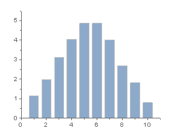
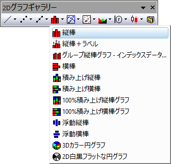
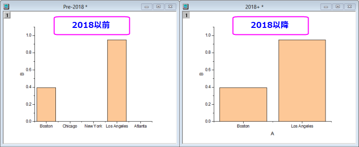

縦棒グラフ
Column-Graph
- 
要求されるデータ
少なくとも1つのY列、あるいは、その部分領域を選択する必要があります。関連付けられたX列がある場合はそれを使用し、そうでない場合は、Y列または行番号のサンプリング間隔が使用されます。
グラフ作成
データを選択します。
メニューからを選択します。
または、
2Dグラフギャラリー ツールバーの縦棒ボタンをクリックします。
- 
テンプレート
COLUMN.OTP (Originのプログラムフォルダにインストールされています。)
ノート
- デ－タプロットの各デ－タポイントのY値が、縦棒の長さで表示されます。 縦棒の幅は一定で、各々のワ－クシ－トの行の値のX値を棒幅の中心に置いて表示します。
- Y=１を基線、または対数スケールで表示された縦棒グラフの向きを、これを境にして変更するYの値とするには、オプションダイアログ（）のグラフタブで対数スケール時に１を基線とするチェックボックスを選択します。
- また、Y=0 の(厚さ0の) 棒を表示するには、｢オプション ｣ダイアログ ()のグラフタブで棒グラフの場合に 0値を表示するのオプションを指定しておきます。
- 枠でデータを切り取るオプションが無効になっていても、横棒/縦棒グラフのデータを切り取る場合があります。 このようなことが発生したら、スクリプトウィンドウ に次のスクリプトを入力して、ENTERキーを押せば、修正できます。
@CLP = 1
- 縦棒/横棒グラフのX列にテキストが含まれるとき、テキストは主目盛ラベルとして使用され、行番号順に並べられます。Origin 2018より前は、ワークシートデータフィルタを適用したときに、データポイントがプロットされていないにも関わらず、空の目盛とフィルタリングされたデータのラベルが登録されていました。これはOrigin 2018で変更され、フィルターデータの目盛は表示されなくなりました（これは、テキストを含み、カテゴリーに設定されていないX列に適用されます）。
- 
バージョン2018より前の状態に戻すには、wks.KHRA=1; を使用します(例えば、これをワークブックスクリプトパネルに追加します)。